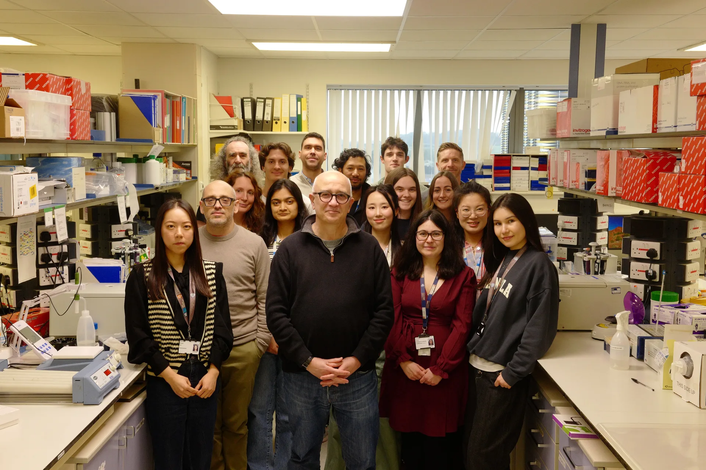
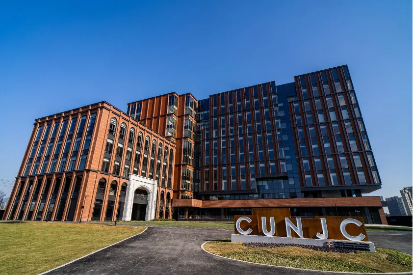
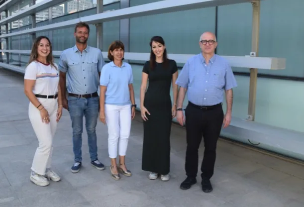

Our Research
Our programme explores the molecular mechanisms involved in controlling energy expenditure, fat deposition, and the mechanisms controlling the partition of energy towards oxidation or storage.
Our international network
Connected by metabolic science.
Explore our laboratories and the people connecting them.

United Kingdom
Our Cambridge laboratory
Based at the Institute of Metabolic Science, our Cambridge team investigates adipose tissue, energy balance and the mechanisms linking obesity to metabolic disease.
Discover Cambridge
China
TVPlab in Nanjing
At the Cambridge University–Nanjing Centre, our programme explores obesity-related metabolic complications, with an emphasis on adipose tissue function and liver lipid metabolism.
Discover Nanjing
Spain
TVPlab in Valencia
Our CIPF–Cambridge collaboration connects adipose biology, lipotoxicity and metabolic disease research, bringing complementary expertise together in Valencia.
Discover ValenciaDiscovery is a shared endeavour.
Meet our academic and industry collaborators, from genomics to therapeutic discovery.
Explore our research areas
White Adipose Tissue Expandability and Function
How the expansion of adipose tissue relates to the development of the Metabolic Syndrome. We investigate the molecular determinants of WAT expandability — the genes, signalling pathways, and epigenetic regulators that allow adipocytes to safely hypertrophy and undergo hyperplasia — and the consequences when this capacity is exceeded, leading to ectopic lipid deposition in liver, heart, and skeletal muscle.
Our central hypothesis is that adipose tissue failure, rather than fat mass per se, drives the cardiometabolic complications of obesity. Understanding what limits expandability — and how to restore it — is a primary goal of the laboratory.
Lipotoxicity in Peripheral Organs: Fatty Liver
Whether lipotoxicity and/or changes in adipokines secreted by adipose tissue affect insulin sensitivity in other organs such as skeletal muscle, heart, liver, brain, beta cells and macrophages. Our laboratory examines the molecular mechanisms by which lipid overload damages the liver (NAFLD/MASLD), heart (diabetic cardiomyopathy), and pancreatic beta cells.
We use mouse genetic models, primary cell culture systems, and translational human tissue studies to dissect the lipotoxic cascade from initial lipid overload to fibrosis, cell death, and organ failure.
Brown Fat and Muscle Thermogenesis
The molecular mechanisms that control energy expenditure and brown fat activation. Brown adipose tissue (BAT) and beige fat dissipate chemical energy as heat through uncoupling protein 1 (UCP1) and related futile cycles, including futile cycling of calcium and creatine in skeletal muscle.
We explore the transcriptional and post-translational regulation of thermogenesis, the contribution of skeletal muscle thermogenesis, and the potential of activating brown and beige fat as a therapeutic strategy for obesity and metabolic syndrome.
Macrophage Biology and Fibroinflammation
Whether modifications in adipogenesis and remodeling of adipose tissue may be good strategies to ameliorate the metabolic effects associated with obesity. Adipose tissue macrophages (ATMs) are key regulators of local and systemic metabolic homeostasis.
During obesity, ATMs shift from an anti-inflammatory, tissue-remodelling phenotype towards a pro-inflammatory state that drives fibrosis, cytokine release, and systemic insulin resistance. Using single-cell genomics, flow cytometry, and in vivo mouse models, we map ATM heterogeneity and identify molecular checkpoints controlling the transition from metabolically healthy to dysfunctional adipose tissue.